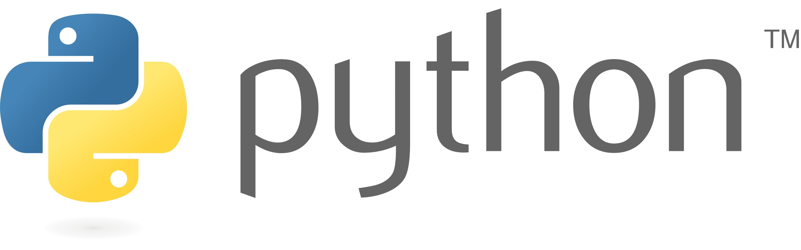
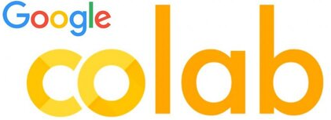

Entornos de desarrollo#
Introducción a las interfaces de desarrollo en Python más comunes en 2025

Demo icons created by Ning Nong - Flaticon
Análisis del Problema#
Estimados estudianes, a continuación les mencionamos algunas condiciones puntuales que hacen parte de nuestro contexto como profesionales del DANE, que en nuestro quehacer trabajamos permenentemente con diferentes volúmenes de datos, frente a nuestro primer acercamiento al software Python:
Tarde o temprano nos llega el momento que necesitamos aprender a programar en Python, debido a las funcionalidades únicas que nos puede ofrecer este software por encima de los usos típicos de sus alternativas como lo son R y SAS.
Hay una cantidad abrumadora de información en internet sobre Python, y para quienes se quieren introducir, falta una estructura que les indique sobre lo que deben aprender y en qué orden basado en sus necesidades profesionales.
Antes de iniciar en la programación con el lenguaje de programación de Python, es necesario conocer las alternativas de software de entornos de dearrollo para ciencia de datos en Python, lo cual se explica a continuación.
{kind=link}
It department icons created by Freepik - Flaticon
Objetivos de la sesión
Delimitar la problemática por la que se aborda Python como lenguaje de programación para el análisis y procesamiento de datos
Entender el funcionamiento de Anaconda como manejador de ambientes de programación y librerías
Introducir a como software de entorno de programación en notebooks
Entender los notebooks como herramienta para el desarrollo de programación y código
Presentar alternativas de software de entorno de programación y ejecución para Python
Python#
La siguiente es una explicación de Python, tanto en su dimensión como lenguaje de programación como en su forma de software (intérprete):
Como lenguaje de programación#
Python es un lenguaje de programación de alto nivel, interpretado, dinámico y multipropósito, diseñado para ser fácil de leer y escribir, incluso para quienes se están iniciando en la programación.
{kind=link}
Características principales:
Sintaxis clara y legible:
Python fue diseñado para parecerse al lenguaje humano, evitando símbolos innecesarios. Esto lo hace especialmente apto para educación, ciencia y desarrollo ágil.
Interpretado:
El código Python no se compila previamente en archivos ejecutables, sino que se ejecuta línea por línea mediante un intérprete. Esto favorece la experimentación, pero puede hacer que sea algo más lento que lenguajes compilados como C o Java.
Tipado dinámico:
No es necesario declarar el tipo de las variables (como
int,float, etc.); Python lo determina automáticamente en tiempo de ejecución.Multiparadigma:
Soporta varios estilos de programación: * Imperativa/procedimental * Orientada a objetos * Funcional
Extensibilidad:
Se puede extender con bibliotecas escritas en C, C++, Fortran, entre otros, para lograr mejor rendimiento o integrar sistemas heredados.
Gran ecosistema de bibliotecas:
Existen miles de paquetes para tareas diversas: Ciencia de datos:
numpy,pandas,scikit-learn,matplotlib,seaborn; Automatización:os,shutil,requests; Inteligencia Artificial:tensorflow,pytorchEjemplo simple en Python:
# Calcular el área de un círculo
import math
radio = 5
area = math.pi * radio ** 2
print(f"El área del círculo es {area:.2f}")
El área del círculo es 78.54
Como software#
Cuando se instala Python en un ordenador, en realidad se está instalando un intérprete, que es un programa que lee, analiza y ejecuta el código escrito en el lenguaje Python.

Code icons created by Freepik - Flaticon
¿Qué es el intérprete de Python?
Es el núcleo del sistema que:
Traduce el código fuente
.pyen instrucciones que la máquina puede entender (de forma indirecta).Gestiona la memoria, los errores, la ejecución paso a paso, etc.
Puede usarse de forma interactiva (línea por línea) o para ejecutar scripts completos.
¿Qué contiene una instalación típica de Python?
El intérprete (por ejemplo,
python.exeen Windows).La librería estándar, que incluye herramientas listas para usar (manejo de archivos, matemáticas, fechas, conexión a internet, etc.).
Herramientas como
pippara instalar paquetes externos.A veces incluye un entorno interactivo simple como IDLE (Python Shell con editor).
Versiones y evolución
La versión más usada es Python 3, activa desde 2008. La serie Python 2 fue descontinuada oficialmente en 2020.
Python se actualiza regularmente, mejorando rendimiento y añadiendo funcionalidades. La versión más reciente estable en 2025 es Python 3.12 (aunque podría haber versiones beta de 3.13).
¿Quién creó Python y por qué?
Python fue creado por Guido Van Rossum a finales de los años 80, como un sucesor del lenguaje ABC, con la intención de ser un lenguaje fácil de aprender pero poderoso.
El nombre “Python” no proviene de la serpiente, sino del grupo cómico británico “Monty Python”.
Usos de Python hoy en día
Ciencia de datos y análisis estadístico
Inteligencia artificial y aprendizaje automático
Desarrollo web
Automatización de tareas
Juegos y simulaciones
Educación en programación
Control de hardware y dispositivos embebidos
Ciberseguridad y pruebas de penetración
Resumen gráfico (conceptual):
Rol |
Descripción |
|---|---|
Lenguaje |
Conjunto de reglas y estructuras para escribir programas (como una gramática). |
Intérprete |
Programa que lee y ejecuta código Python (por ejemplo, |
Archivos comunes |
|
Anaconda#
Es una distribución gratuita y de código abierto de Python y R que incluye:
Un intérprete de Python
Un gran conjunto de paquetes científicos y de análisis de datos
Herramientas para gestionar entornos virtuales
Interfaces de trabajo como Jupyter Notebook
Está pensada para facilitar el trabajo con análisis de datos, machine learning, ciencia, ingeniería y visualización, sin que el usuario tenga que instalar cada componente por separado.
{kind=link}
{kind=link}
¿Qué incluye Anaconda?
Al instalar Anaconda, se instalan cientos de componentes preconfigurados que suelen ser necesarios para trabajar en ciencia de datos y otras áreas. Aquí los más importantes:
Herramientas de desarrollo:
Jupyter Notebook: Interfaz de notebooks interactivos.
JupyterLab: Versión más avanzada y modular de Jupyter.
Spyder: Entorno de desarrollo (IDE) tipo MATLAB para Python.
VS Code (opcional): Se puede integrar fácilmente.
Paquetes preinstalados:
Incluye más de 1500 paquetes populares en ciencia de datos, como:
Tipo de tarea
Paquetes incluidos
Cálculo numérico
numpy,scipyAnálisis de datos
pandasVisualización
matplotlib,seaborn,bokehMachine Learning
scikit-learn,xgboostDeep Learning
tensorflow,pytorchWeb scraping
requests,beautifulsoup4Esto ahorra muchas horas de instalación y resolución de dependencias.
Gestor de paquetes y entornos: conda: Es el gestor de paquetes y entornos virtuales de Anaconda. Sirve para:
Instalar y actualizar paquetes.
Crear entornos separados con versiones distintas de Python o bibliotecas.
{kind=link}
página de inicio de Anaconda
¿Por qué usar Anaconda?
Todo en uno: Viene con todo lo necesario para comenzar a trabajar en ciencia de datos o programación científica.
Gestión de entornos: Puedes tener diferentes versiones de Python y paquetes sin conflictos.
Facilita instalación de paquetes pesados: Algunos paquetes como
numpyotensorflowpueden ser difíciles de instalar conpip, perocondasimplifica el proceso.Ideal para ciencia de datos y educación: Muy popular en universidades y cursos de Python.
¿Qué es un entorno en Anaconda?
Un entorno es una instalación aislada de Python con su propio conjunto de paquetes. Esto evita que un proyecto interfiera con otro. Ejemplo de uso:
# Crear un entorno nuevo
conda create -n mi_entorno python=3.12
# Activar el entorno
conda activate mi_entorno
# Instalar paquetes en ese entorno
conda install numpy pandas matplotlib
{kind=link}
Interfaz de Anaconda Prompt
¿Dónde descargarlo?
Desde la página oficial: https://www.anaconda.com
¿Es necesario usar Anaconda para programar en Python?
No. Puedes usar Python directamente desde su sitio oficial e instalar paquetes con
pip. Sin embargo, Anaconda:Te ahorra mucho tiempo en la configuración inicial
Es ideal si trabajarás con datos, gráficos o inteligencia artificial
Es muy amigable para aprender
Resumen
Aspecto
Anaconda
Tipo
Distribución de Python + herramientas
Gestor de paquetes
condaIncluye Python
Sí
Incluye Jupyter
Sí
Uso principal
Ciencia de datos, análisis, machine learning
Alternativa
Miniconda (más ligera)
JupyterLab#
Es un entorno de desarrollo interactivo basado en la web, que permite trabajar con código, datos, documentos y visualizaciones de forma integrada. nFue desarrollado por Project Jupyter, la misma iniciativa detrás de Jupyter Notebook.
{kind=link}
{kind=link}
¿Para qué sirve?
JupyterLab sirve principalmente para:
Ejecutar código en notebooks interactivos
Documentar el trabajo con celdas de texto y ecuaciones
Explorar y visualizar datos
Desarrollar proyectos de análisis, simulación, aprendizaje automático, entre otros
Escribir y ejecutar scripts
.py, ver archivos.csv,.json,.md, imágenes, y mucho más
¿Qué incluye JupyterLab?
JupyterLab está compuesto por varios módulos integrados que trabajan juntos en una misma ventana web:
**Editor de notebooks
.ipynbcon celdas de código y texto (como en Jupyter clásico)**Editor de texto/código para archivos
.py,.md,.json,.csv, etc.Terminal interactiva (similar a una consola de Linux)
Explorador de archivos para navegar por carpetas del sistema
Vista previa de gráficos, PDFs, imágenes, hojas de cálculo**
Soporte para múltiples kernels (ej. Python, R, Julia)
Todo esto en un diseño de paneles acoplables (como pestañas o ventanas que puedes mover, dividir y reorganizar).
{kind=link}
Interfaz gráfica de JupyterLab
mostrando un notebook como entorno de desarrollo para Python.
¿Cómo se instala?
JupyterLab se puede instalar fácilmente si ya tienes Anaconda o Python:
Si usas Anaconda:
conda install -c conda-forge jupyterlab
Si usas pip (con instalación básica de Python):
pip install jupyterlab
para ejecutarlo:
jupyter labEsto abrirá la interfaz de JupyterLab en tu navegador (por defecto en
http://localhost:8888).¿Qué es un kernel en JupyterLab?
Un kernel es el motor que ejecuta el código. JupyterLab permite cambiar de kernel según el lenguaje que estés usando:
Python (el más común)
R
Julia
Bash
C++
Y otros, si instalas el kernel correspondiente
Esto hace que JupyterLab no se limite a Python.
¿Por qué usar JupyterLab?
Combina código, documentación, resultados y visualizaciones en un mismo entorno
Permite trabajar de forma interactiva y modular
Ideal para experimentación, análisis de datos, enseñanza y ciencia reproducible
Todo se guarda como archivos legibles (JSON, Markdown, Python)
Está en constante desarrollo y mejora
Notebook#
¿Qué es un notebook en el contexto de los entornos de desarrollo de Python?:
Un notebook es un tipo especial de interfaz interactiva que permite escribir y ejecutar código en fragmentos (llamados celdas) dentro de un entorno visual, junto con texto, fórmulas matemáticas, gráficos, tablas y otros elementos multimedia. En Python, el entorno de notebooks más común es Jupyter Notebook, aunque existen variantes como JupyterLab, Google Colab o los notebooks integrados en herramientas como VS Code.
{kind=link}
Interfaz gráfica de Google Colab
mostrando un notebook como entorno de desarrollo para Python.
Características principales de un notebook:
Celdas de código:
Permiten escribir código Python (u otros lenguajes, dependiendo del kernel). El código se ejecuta por bloques, y su salida (texto, gráficos, errores) aparece justo debajo de cada celda.
Celdas de texto (Markdown):
Estas celdas permiten documentar el código, explicar procedimientos, agregar títulos, subtítulos, listas, ecuaciones LaTeX, etc. Son útiles para crear documentos bien estructurados y comprensibles.
Ejecución interactiva:
A diferencia de un archivo .py que se ejecuta de principio a fin, en un notebook puedes ejecutar celdas de forma independiente, en cualquier orden. Esto facilita el análisis exploratorio de datos, pruebas de código o desarrollo incremental.
Visualización integrada:
Gráficos generados con bibliotecas como matplotlib, seaborn o plotly se muestran automáticamente dentro del mismo notebook, lo que favorece la inspección visual inmediata de resultados.
Persistencia del estado:
Las variables y objetos definidos en una celda quedan disponibles para otras celdas posteriores, siempre que el kernel (el motor que ejecuta el código) siga activo. Esto facilita la continuidad del trabajo.
Exportabilidad:
Un notebook se guarda como archivo .ipynb (formato JSON). Puede exportarse a PDF, HTML, o incluso a archivos .py, permitiendo compartir análisis o informes reproducibles.
Otras alternativas#
Google Colab#
(Abreviatura de Colaboratory) es una plataforma gratuita basada en la nube, desarrollada por Google, que permite escribir y ejecutar código Python directamente desde el navegador, sin necesidad de instalar nada en el computador. Su interfaz está basada en Jupyter Notebook, lo que significa que puedes trabajar con celdas de código y de texto (Markdown), visualizar gráficos, manipular datos y documentar tus procesos de forma interactiva.
{kind=link}
{kind=link}
Colab es especialmente útil para análisis de datos, aprendizaje automático y tareas educativas, ya que ofrece acceso gratuito a recursos computacionales potentes, como GPU y TPU, lo que permite ejecutar modelos complejos de machine learning sin requerir un computador local potente. Además, está totalmente integrado con Google Drive, lo que facilita el guardado automático y el trabajo colaborativo en tiempo real, similar a Google Docs.
Es una herramienta práctica y accesible para desarrollar y compartir proyectos en Python desde cualquier dispositivo con conexión a internet.
VS Code#
Visual Studio Code es un editor de código fuente ligero, gratuito y de código abierto desarrollado por Microsoft. Está diseñado para ser rápido, versátil y altamente personalizable, lo que lo convierte en una de las herramientas favoritas de programadores de todos los niveles. Aunque no es un entorno de desarrollo completo por sí mismo (como un IDE tradicional), puede convertirse en uno muy potente mediante extensiones.
VS Code permite escribir y ejecutar código en múltiples lenguajes de programación, incluyendo Python, JavaScript, C++, HTML y muchos más. Ofrece características como resaltado de sintaxis, autocompletado inteligente, depuración integrada, control de versiones con Git, y terminal incorporada. Para programar en Python, basta con instalar la extensión oficial de Python, que habilita soporte para notebooks, depuración, linting, entornos virtuales y ejecución interactiva del código.
Es un editor moderno y flexible que, con las extensiones adecuadas, puede adaptarse a casi cualquier flujo de trabajo de desarrollo, desde scripts simples hasta proyectos complejos de software, incluyendo ciencia de datos, aplicaciones web o sistemas embebidos.
Spyder#
(Scientific Python Development Environment) es un entorno de desarrollo integrado (IDE) diseñado especialmente para científicos, ingenieros, analistas de datos y estudiantes que trabajan con Python. Su diseño recuerda al entorno de MATLAB, lo que lo hace especialmente cómodo para quienes vienen de disciplinas técnicas o numéricas.
{kind=link}
{kind=link}
Spyder incluye un editor de código con resaltado de sintaxis, autocompletado y depuración; una consola interactiva que permite ejecutar código en tiempo real; un explorador de variables para visualizar datos y estructuras como si fueran hojas de cálculo; y paneles adicionales para inspeccionar archivos, documentación, historial y gráficos. Todo esto lo convierte en una herramienta ideal para análisis de datos, computación científica y desarrollo de algoritmos.
Generalmente viene incluido con Anaconda, por lo que está listo para usarse con bibliotecas como NumPy, Pandas, Matplotlib o SciPy sin configuraciones adicionales. En resumen, Spyder es un entorno claro, enfocado y funcional para quienes desean combinar programación con exploración interactiva de datos y resultados numéricos.
Pycharm#
Es un entorno de desarrollo integrado (IDE) especializado en Python, creado por la empresa JetBrains. Está diseñado para facilitar el desarrollo profesional de aplicaciones, automatización, análisis de datos y ciencia computacional. Ofrece una experiencia robusta con herramientas avanzadas como autocompletado inteligente, depuración visual, análisis estático de código, pruebas automáticas, control de versiones integrado (como Git) y soporte para entornos virtuales.
{kind=link}
{kind=link}
Existen dos versiones principales: una Community Edition, gratuita y de código abierto, con lo esencial para programar en Python, y una Professional Edition, de pago, que incluye características adicionales como soporte para desarrollo web (Django, Flask), bases de datos, ciencia de datos y herramientas colaborativas.
PyCharm permite gestionar proyectos grandes de forma ordenada, facilita el trabajo con notebooks, terminales y scripts, e integra herramientas de gestión de paquetes como pip y conda. En resumen, PyCharm es una opción potente y completa para quienes buscan un entorno enfocado en productividad, estructura y herramientas profesionales en el desarrollo con Python.
AWS Cloud9 y Azure Notebooks#
AWS Cloud9 es un entorno de desarrollo integrado (IDE) basado en la nube, ofrecido por Amazon Web Services. Permite escribir, ejecutar y depurar código directamente desde el navegador, sin necesidad de instalar nada en el computador local. Cloud9 incluye soporte para múltiples lenguajes (incluido Python), terminal Linux integrada, depurador gráfico, resaltado de sintaxis y control de versiones con Git. Su principal fortaleza está en que se integra profundamente con otros servicios de AWS, lo que facilita el desarrollo de aplicaciones que usen la nube (por ejemplo, APIs, bases de datos o funciones Lambda) desde un solo lugar. Además, el entorno corre sobre servidores virtuales (EC2), lo que permite ajustar recursos según las necesidades del proyecto.
Azure Notebooks, por su parte, fue un servicio gratuito ofrecido por Microsoft para trabajar con notebooks Jupyter en la nube, similar a Google Colab. Permitía ejecutar código Python desde el navegador, guardar los proyectos en la nube y compartirlos fácilmente. Aunque fue útil para tareas educativas y prototipos rápidos, Microsoft descontinuó oficialmente Azure Notebooks en 2021, recomendando en su lugar el uso de Azure Machine Learning Notebooks, que forman parte de su plataforma de inteligencia artificial en la nube. Estos nuevos notebooks están más enfocados en proyectos de ciencia de datos y aprendizaje automático, ofreciendo mayor potencia y escalabilidad, aunque requieren una configuración más técnica.
Apéndice#
¡Gracias por su participación en el curso! Lo esperamos en una siguiente oportunidad.
Documentación#
Documentación del software Python
Documentación del software Anaconda
Documentación del software Jupyter
Documentación del software Spyder
Documentación del software Visual Studio Code
Documentación del servicio Google Colab
Referencias#
Bader, D., Jablonski, J., & Heisler, F. (2021). Python Basics: A Practical Introduction to Python 3. Real Python.
Taller de Análisis y procesamiento de datos con Open Source © 2025 by Aníbal Montero is licensed under CC BY-NC-ND 4.0